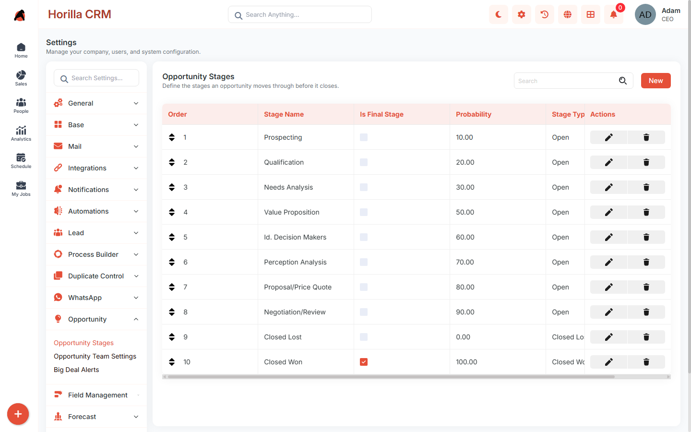
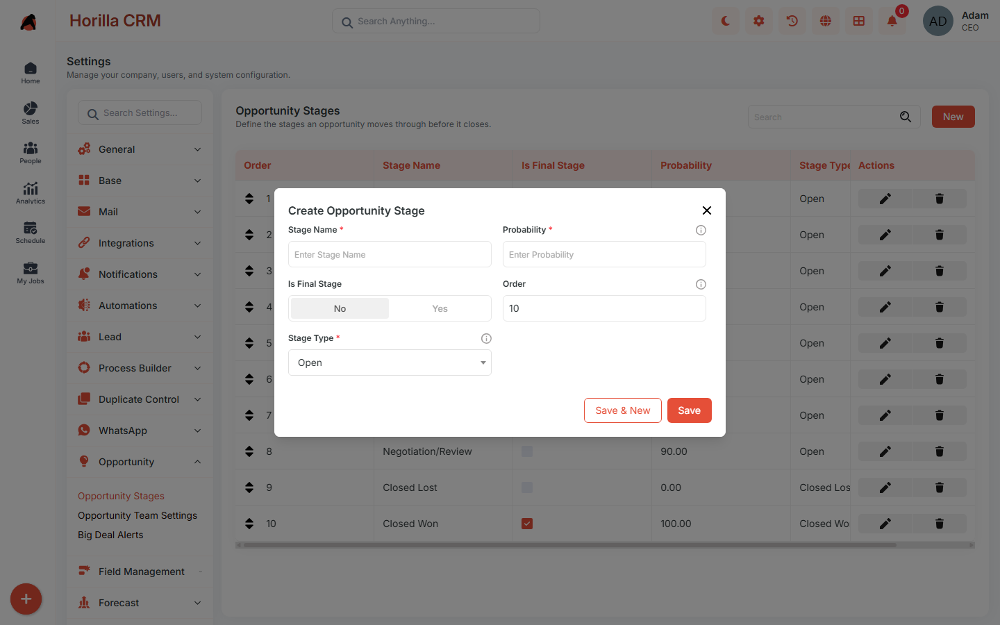

Introduction
Path: Settings → Opportunity → Opportunity Stages. The page title is Opportunity Stages, with the description “Define the stages an opportunity moves through before it closes.” Stages can be reordered by dragging the handle in Order. A company has one final stage, and that stage stays last. Each stage also has a type: Open, Closed Lost or Closed Won.
1. Opportunity stage list
| Column | Contents |
|---|---|
| Order | Position in the pipeline. Drag the handle to reorder. |
| Stage Name | Name of the stage, such as Prospecting, Qualification or Closed Won. |
| Is Final Stage | Checked for the one final stage. Closed Won is the final stage in the list shown here. |
| Probability | Default probability for the stage, from 0.00 to 100.00. |
| Stage Type | Open, Closed Lost or Closed Won. |
| Actions | Edit or delete the stage. |

2. Creating an opportunity stage
Click New. The form title is Create Opportunity Stage.
| Field | Description |
|---|---|
| Stage Name | Required. Name of the stage. |
| Probability | Required. Default probability percentage for this stage. |
| Is Final Stage | No or Yes. Only one stage can be final. Marking a stage as final clears the previous final stage and moves the new one to the end. |
| Order | Position in the pipeline. The form suggests the next order. |
| Stage Type | Required. Open, Closed Lost or Closed Won. |
Save stores the stage and closes the form. Save & New stores it and opens a blank form.
